risorse | tabellone segnapunti con arduino
La palestra dove gioca la squadra di pallamano locale è dotata di un tabellone segnapunti controllato da una consolle che ultimamente manifesta diversi problemi: il pulsante per arrestare il contaminuti non sempre funziona, viceversa il pulsante per farlo partire è oltremodo sensibile; a volte inoltre l'orologio si azzera senza alcun preavviso.
Immagino che tutto ciò sia dovuto a problemi di usura: l'impianto ha più di 30 anni alle spalle e diversi pulsanti della consolle hanno una corsa talmente limitata che viene il sospetto che la molla di ritorno abbia perso la sua elasticità causando la mancata apertura del contatto una volta che il pulsante è stato rilasciato.
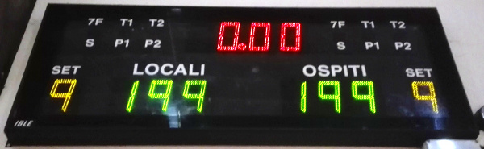Il tabellone segnapunti
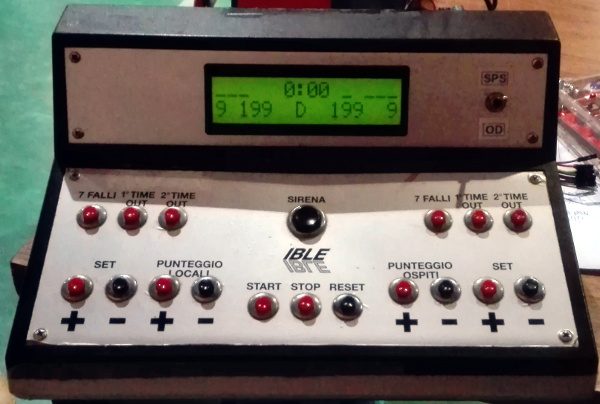La consolle di comando
Mi è venuta perciò l'idea di sostituire la consolle con un computer. Ho già sviluppato un programma che aiuta i refertisti a tener traccia degli eventi di gioco che vanno registrati nei documenti ufficiali di gara, ma resta il fatto che l'addetto al tabellone ha le sue belle difficoltà a mantenere allineati punteggio e tempo effettivo di gioco con lo svolgimento della partita. Non dovrebbe essere troppo difficile estendere il programma in modo che si occupi di gestire automaticamente pure il tabellone, una volta capito come consolle e tabellone comunicano tra di loro.
Ho contattato l'assistenza tecnica del produttore, ma trattandosi di un modello fuori produzione dai primi anni '90 l'addetto non è stato in grado di fornirmi alcuna informazione utile circa il protocollo di comunicazione se non che dovrebbe trattarsi di una trasmissione seriale TTL.
Il tabellone è appeso al muro della palestra ed è collegato ad una presa di corrente raggiungibile solo con una scala. L'ho sempre visto acceso, anche se immagino che possa essere spento da uno dei quadri elettrici della palestra. Dal tabellone scende un cavo di tipo telefonico a 6 vie, lungo una ventina di metri, che termina con un connettore RJ25 (6P6C). Un adattatore RJ25/DB25 consente di collegare tra loro tabellone e consolle. La consolle è normalmente scollegata dal tabellone, il quale in questa modalità mostra alternativamente la data (mese/giorno) e l'ora corrente (ora/minuto).
Il tabellone contiene 12 display sette segmenti: due gialli per l'indicazione del numero di set vinti, sei verdi per il punteggio (essendo 199 il massimo punteggio visualizzabile del segmento delle centinaia si accendono solo i due segmenti verticali di destra), quattro display rossi per l'orologio. Ci sono inoltre tre indicatori luminosi denominati 7F/S, T1/P1 e T2/P2 per ognuna delle due squadre.
La consolle è normalmente spenta, e si accende non appena si inserisce lo spinotto del cavo proveniente dal tabellone. Da ciò deduco che l'alimentazione della consolle è fornita dal tabellone. Se l'interruttore OD/SPS della consolle è in posizione OD, il tabellone mostra la data e l'ora corrente (OD=Ora/Data?), mentre quando è in posizione SPS entra in modalità segnapunti (SPS=SegnaPuntiS…?).
Quando collegata la consolle risulta operativa sia in modalità OD che SPS: agendo sui pulsanti il punteggio e il tempo mostrati dal display LCD della consolle – il cui contenuto ricalca quello del tabellone – cambiano di conseguenza. Sembra quindi che l'interruttore OD/SPS serva solo per decidere se la configurazione della consolle debba essere mostrata anche sul tabellone.
Il sistema è dotato di memoria: quando la consolle viene alimentata, il display mostra la situazione presente prima che venisse scollegata (il punteggio della partita giocata la settimana precedente, per indentersi): non ho idea di chi mantenga la memoria dell'ultimo punteggio, se la consolle o il tabellone. Non mi risulta ci siano batterie dentro la consolle.
La tentazione di aprire la consolle è forte, ma non vorrei rischiare di peggiorare la situazione: come si vede dalla foto della parte posteriore della consolle, si vede che è tenuta insieme con svariate stratificazioni di scotch, nastro adesivo e cerotti. In secondo luogo è di proprietà del comune, per cui sarebbe probabilmente necessario ottenere un permesso esplicito prima di intervenire. Un tentativo di reverse-engineering non invasivo mi pare meno pericoloso.
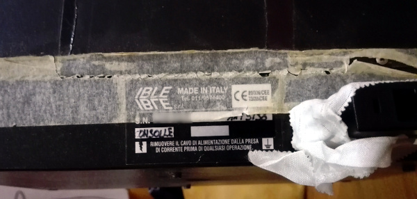Il sistema di chiusura della consolle
La rete non mi è stata molto d'aiuto in questo caso, se non a rintracciare l'indirizzo e-mail dell'assistenza tecnica del produttore. La ricerca del codice del modello dell'impianto (SPS-HC20) non ha dato nessun frutto. Ho scoperto che SPS potrebbe stare per Speicherprogrammierbare Steuerung, cioè PLC in tedesco(?!), mentre HC20 potrebbe forse riferirsi ad un vecchio PLC della Festo; il più citato in rete sembra essere il "PS1-HC20-60-FST", ma ce ne sono diversi altri. Dopo qualche serata di tentativi infruttuosi ho deciso di abbandonare le ricerche e iniziare con le misurazioni sul campo.
Ho effettuato le prime prove con un multimetro, per verificare i livelli di tensione sulle diverse coppie di conduttori del cavo di collegamento. Ho eseguito le misure a vuoto (senza collegare la consolle), ma non sono riuscito ad ottenere nulla di definitivo, nè in AC, nè in DC.
Forte dell'indicazione avuta dall'assistenza tecnica sulla tipologia di comunicazione, e conscio che un multimetro non potrà essermi d'aiuto nell'analisi dei segnali che consolle e tabellone usano per comunicare, ho ordinato il seguente materiale:
Primo giorno di analisi dei segnali. Ho predisposto il circuito di sniffing secondo lo schema seguente:
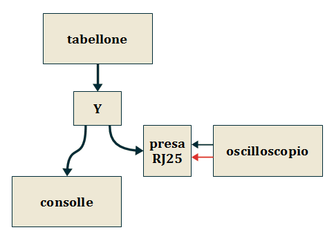Diagramma a blocchi del circuito di analisi
Nella pratica, il circuito si presenta così:
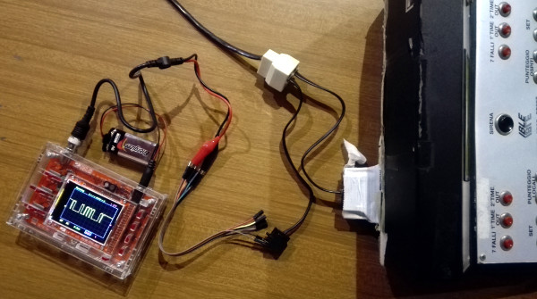Il circuito di analisi vero e proprio
Si nota in alto il cavo proveniente dal tabellone che entra nello sdoppiatore; da qui si procede da un lato verso la consolle, dall'altro verso la presa RJ25 cui è connesso l'oscilloscopio.
I due brevi spezzoni di cavo 6P6C in uscita allo sdoppiatore fanno parte della dotazione standard del Kit robotico mBot di Makeblock; di lunghezza ideale per questa applicazione, hanno però la particolarità di avere le spine montate capovolte tra loro, causando così il ribaltamento dei segnali sui contatti di un terminale rispetto all'altro. Fortunatamente, anche lo sdoppiatore a Y che ho acquistato internamente inverte l'ordine delle linee (cosa che non avevo nemmeno notato quando l'ho scelto!): il doppio ribaltamento ristabilisce così la sequenza corretta dei segnali sui terminali.
L'identificazione dei conduttori all'interno del cavo di collegamento si basa sullo standard Registered jack (RJ). Facendo riferimento all'immagine di destra della presa RJ25:
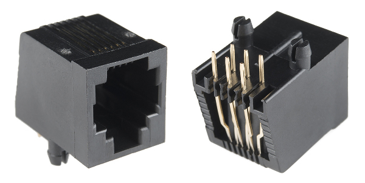La presa RJ25 a saldare
il terminale più a sinistra della fila esterna è collegato al conduttore numero 1, quello più a sinistra della fila interna al conduttore numero 2. Il terminale centrale della fila più esterna è collegato al conduttore numero 3, quello della fila interna al conduttore numero 4. I terminali di destra sono collegati ai conduttori 5 e 6 rispettivamente. I conduttori all'interno del cavo di norma colorati secondo la sequenza bianco, nero, rosso, verde, giallo e azzurro.
In questa prima sessione di lavoro ho registrato la presenza di un segnale alternato a 50Hz e ampiezza 24V picco-picco sui terminali 5 e 6 e un segnale impulsivo a 5V tra i terminali 2 e 3:
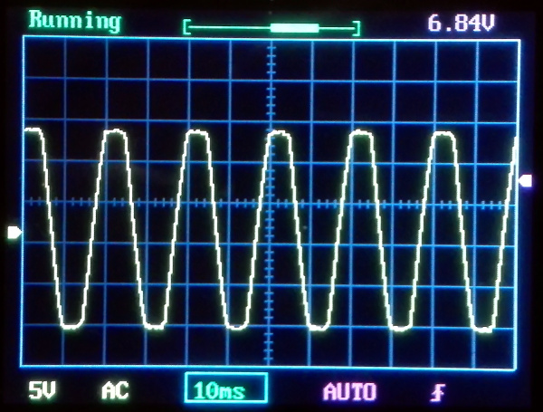L'onda sinusoidale tra i terminali 5 e 6
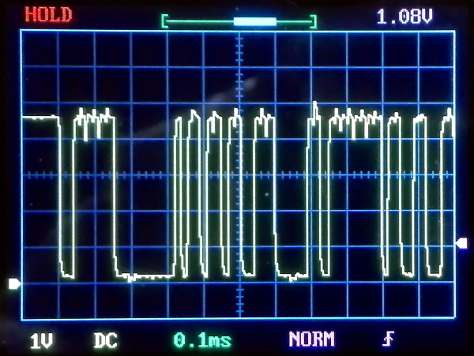Il segnale TTL tra i terminali 2 e 3
Difficile al momento trovare un'interpretazione non ambigua del segnale. Dovrebbero vedersi una sequenza di un bit di start, 7/8 bit di dati, forse uno di parità, ed almeno un bit di stop. Così non mi pare, ma a occhio potrei sbagliare. Mi viene anche il dubbio che se i terminali 2 e 3 portano i segnali TX e RX quel che mostra l'oscilloscopio è in realtà una loro combinazione…
L'impulso più breve (il primo all'interno della quinta divisione da sinistra) sembra avere ampiezza pari a circa una tacca dell'asse orizzontale, ovvero 0,1ms/5=20µs, che corrisponde ad una frequenza intorno ai 50KHz; si può quindi ipotizzare una velocità di trasmissione di 57600 baud, il cui periodo è pari a 17,36µs.
Più che di seriale TTL sarebbe più corretto parlare di UART, Universal Asynchronous Receiver-Transmitter:
If he uses only Tx and Rx, and you also remove its levels, then there's nothing RS232 anymore about it! Call it UART. (fonte: Stack Exchange)
In una comunicazione seriale standard il livello alto della linea indica lo stato di idle, lo start bit è uno 0, lo stop bit è un 1 e i bit di dati sono inviati a partire da quello meno significativo (trasmissione lsb-first). La forma del segnale catturato tutto sommato rispetta queste caratteristiche, a parziale conferma che potrebbe trattarsi di una trasmissione seriale asincrona.
Ho trovato in rete un pannello molto simile a quello in questione: l'unica differenza sta nei due indicatori aggiuntivi T3/P3. Nella descrizione si legge:
CONSOLLE DI PROGRAMMAZIONE La consolle di controllo permette di trasferire in tempo reale la situazione di gioco gestita attraverso un display alfanumerico a cristalli liquidi (LCD) riportante tutte le informazioni contenute nel pannello segnapunti. Il trasferimento dati dalla consolle al pannello segnapunti avviene attraverso comunicazione seriale a bassa tensione con tre fili di collegamento. [enfasi mia]
I modelli presentati sono SPS HC 14, 22 e 29, quindi anche i codici modello sono molto simili. Tutto sembra suggerire che consolle e tabellone comunichino effettivamente via seriale.
Ho ricontrollato le forme d'onda su tutte le coppie di terminali confermando le osservazioni fatte la volta precedente, in particolare l'assenza di altri segnali persistenti eccezion fatta per i due già individuati.
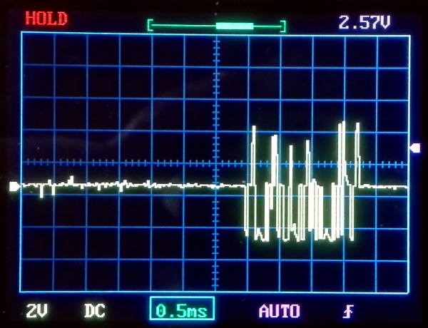Un'istantanea del segnale registrato tra i terminali 3 e 4 – rumore/disturbi?
Ho notato che il segnale presente tra i terminali 2 e 3 (puntale di massa sul 2) è presente solo se la consolle è in modalità SPS; se l'interruttore è su OD, il segnale impulsivo sparisce e la tensione sul terminale 3 si stabilizza sul livello di massa.
Ho studiato l'effetto dei pulsanti della consolle sulle linee del cavo di connessione con il multimetro. Ho scoperto che in modalità SPS i terminali 2 e 5 sono cortocircuitati, mentre risultano sconnessi in posizione OD. Il pulsante della sirena invece sembra non avere alcun effetto diretto sui terminali. Mi sarei aspettato la cortocircuitazione di un'altra coppia di terminali, immaginando che la consolle usi la tensione di alimentazione che riceve dal tabellone per far suonare la sirena.
Oggi vengo a sapere che è da anni che la sirena non funziona più (sigh!).
Ho analizzato le forme d'onda dei segnali provenienti dal tabellone a consolle scollegata; ho ritrovato la sinusoide sui terminali 5 e 6, mentre sui terminali 2 e 3 vedo solo rumore. Ciò dovrebbe indicare che il segnale presente su queste linee è generato dalla consolle.
È giunta l'ora di provare a decodificare il segnale seriale attraverso l'adattatore USB/Seriale TTL. Prima di procedere con il nuovo esperimento ho verificato per l'ennesima volta la presenza del segnale TTL sui pin 2 e 3, per sicurezza. Ho anche verificato che, una volta azzerato punteggi e contaminuti, il segnale digitale è stabile:
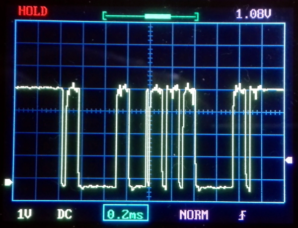Il segnale presente tra i terminali 3 e 4 a tabellone azzerato
Ho anche verificato che una volta avviato il conteggio del tempo la forma d'onda del segnale cambia di conseguenza, in particolare deduco che le cifre dell'orologio sono codificate nella parte centrale del segnale:
L'effetto del conteggio del tempo sul segnale
Ho predisposto il solito circuito con lo sdoppiatore, sostituendo l'oscilloscopio con l'adattatore USB/Seriale TTL. Ho collegato il contatto di massa dell'adattatore al terminale numero 2 della presa RJ25 e il contatto RX al terminale numero 3. Ho quindi inserito l'adattatore al portatile con Windows 7 su cui avevo preventivamente installato l'emulatore di terminale Termite.
Ho effettuato diverse catture a velocità comprese tra 9600 e 57600 baud con la porta seriale configurata su 8 bit di dati, nessuna parità, 1 bit di stop. Speravo di imbattermi in una trasmissione ASCII, ma evidentemente così non è. Ho provato tutte le configurazioni possibili alla velocità di 57600 baud, senza mai riuscire ad ottenere qualcosa di leggibile.
Rassegnato a dover decodificare una trasmissione binaria, ho effettuato un paio di catture a 57600/8N1 con l'intento di studiarle con calma a casa, su due scenari distinti (ogni operazione sulla consolle avveniva all'incirca un secondo dopo la precedente):
RESET → il tabellone indica 0.00 +1 LOCALI +1 LOCALI +1 LOCALI -1 LOCALI -1 LOCALI -1 LOCALI +1 OSPITI +1 OSPITI +1 OSPITI -1 OSPITI -1 OSPITI -1 OSPITI START → il tabellone indica 20.00 attendo qualche secondo... STOP → il tabellone indica 19.54
Primo scenario, qui la relativa cattura
→ il tabellone indica 19.50, LOCALI 3, OSPITI 3 RESET → il tabellone indica 0.00, LOCALI 3, OSPITI 3 -1 LOCALI -1 LOCALI -1 LOCALI -1 OSPITI -1 OSPITI -1 OSPITI START → il tabellone indica 20.00 attendo qualche secondo... STOP → il tabellone indica 19.50 +1 LOCALI +1 OSPITI RESET → tabellone indica 0.00, LOCALI 1, OSPITI 1 +1 LOCALI -1 LOCALI -1 LOCALI -1 OSPITI
Secondo scenario, qui la relativa cattura
Il contenuto delle catture non è chiaro, noto inoltre una certa instabilità a fronte di un segnale fisso; per esempio all'inizio della prima cattura, a tabellone azzerato, si legge:
7F FE FE FE 7F FE FE FE 7E 3F FE FE 7E 3F FE FE 7F FE FE FE 7E 3F FE FE ...
La stragrande maggioranza dei bit sono a 1, in numero straordinariamente alto in verità, considerata la natura del segnale. Altre oscillazioni inaspettate si trovano pure in coda alla cattura:
... 30 DE 9D FE FE 30 DE 9D FE FE 30 DE 8D FE FE 30 DE 9D FE FE 30 DE 9D FE FE 30 DE 99 FE FE 30 DE 9D FE FE 30 DE 9D FE FE 30 DE 9D FE FE 30 CE 9D FE FE 30 DE 99 FE FE 30 DE 9D FE FE 30 DE 9D FE FE 30 CE 9D FE FE 30 DE 9D FE FE ...
Tornando al segnale, a voler imporre una prima approssimativa interpretazione del segnale in chiave seriale si potrebbe forse dedurre che la trasmissione avviene per pacchetti di tre byte:
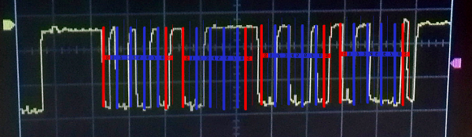In rosso i bit di start/stop, in blu quelli di dati
Qualcosa ancora non torna…
Oggi la sirena ha emesso un breve suono quando ho incidentalmente cortocircuitato i terminali 5 e 6 della presa RJ25. Che sia il modo che il tabellone ha di segnalare che qualcosa non va? Va detto che durante il buzz il tabellone si è completamente spento. La sirena comunque funziona, quindi è il pulsante o il circuito di comando ad avere qualche problema.
Dopo innumerevoli e purtroppo infruttuosi tentativi di trovare un'interpretazione seriale inequivocabile del segnale emesso dalla consolle, ho deciso di cambiare approccio: voglio tentare di ricostruire uno dei segnali catturati con l'oscilloscopio attraverso la porta seriale di Arduino. Il punto di partenza è uno sketch che emette una breve sequenza di bit a 1 alternati da un bit a 0:
[file serial-tx.ino]
void setup() {
// 9600, 14400, 19200, 38400, 57600, 115200
Serial.begin(19200);
}
void loop() {
Serial.print("\xaa\xaa\xaa");
delay(20);
}
Se è vero che il pacchetto è formato da tre byte, la velocità che genera un segnale di durata comparabile a quella vista sull'oscilloscopio è 19200 baud:
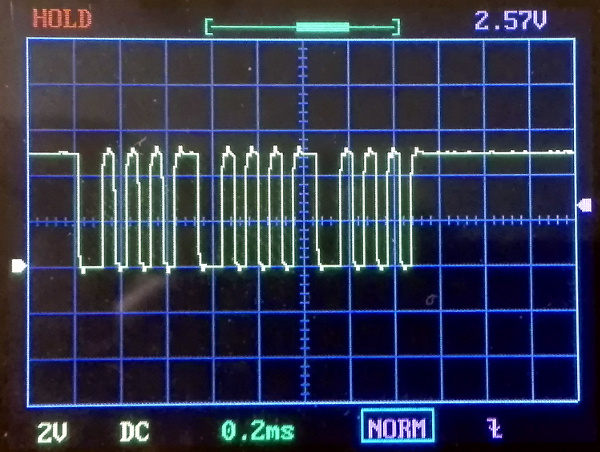Trasmissione seriale della sequenza binaria «0xAA 0xAA 0xAA» a 19200 baud
Nell'immagine si riconosce il bit di start a 0 seguito da una sequenza di quattro coppie di bit 0, 1 (i bit del byte 0xAA trasmessi a partire dal meno significativo) e in coda il bit di stop a 1. La sequenza si ripete identica a sè stessa per tre volte, tanti quanti i byte trasmessi.
Ho effettuato delle nuove acquisizioni del segnale prodotto dalla consolle dopo aver aggiornato il firmware dell'oscilloscopio. Ho cercato dapprima di determinare la posizione dei dati di cui ho maggior controllo, ovvero set e punteggi. I due segnali sotto riportati si riferiscono ad un tabellone azzerato tranne che per l'indicazione del numero di set assegnati alla squadra locale, impostato a 3 nel primo caso, a 4 nel secondo:
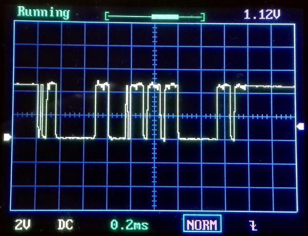Segnale con set locali uguale a 3
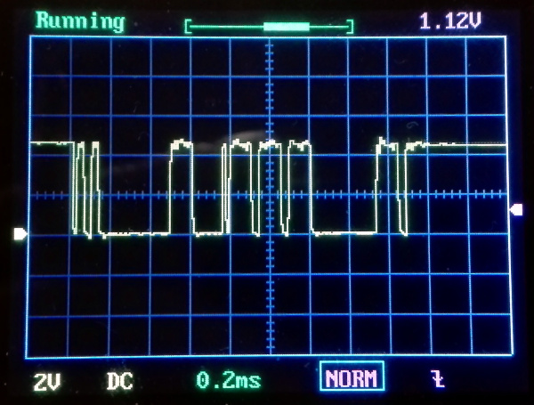Segnale con set locali uguale a 4
L'unica parte del segnale che è cambiata è quella iniziale. La durata degli impulsi più brevi poi è incompatibile con una velocità di trasmissione a 19200 baud, come ipotizzato ultimamente. Evidentemente sono ben più di tre i byte che la consolle invia al tabellone. In via preventiva ho approfittato per eseguire una nuova serie di catture con l'emulatore di terminale seriale, questa volta a 38400 baud, partendo con il set locali azzerato, attendendo un secondo, incrementandolo di uno per riportarlo a zero trascorso un altro secondo. Le oscillazioni permangono, indipendentemente dalla configurazione della porta seriale, come si può notare dal contenuto delle catture:
Mi riprometto di rivedere con la dovuta calma tutto quanto il materiale oggi raccolto a mente fresca.
Ho deciso di provare a ricostruire il segnale emesso dalla consolle inviando un'opportuna sequenza di byte attraverso la porta seriale di Arduino. Dopo poche prove sono giunto alla conclusione che non può trattarsi di una comunicazione seriale convenzionale: la presenza dei bit di stop rende impossibile far combaciare il segnale seriale con la forma d'onda originale indipendentemente dalla velocità di trasmissione scelta. L'immagine sottostante mostra la forma d'onda di una trasmissione seriale di una sequenza di 5 byte a 38400 baud:
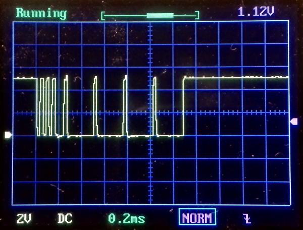Il segnale presente sul pin TX di Arduino
Assodato che non si tratta di una comunicazione seriale convenzionale, mi concentro sullo studio dell'anatomia del segnale, nell'ottica di generarlo da zero. Quando il tabellone è completamente azzerato, il segnale si presenta così:
-----+ +---+ +---+ + +---+ +---+ +---+ +---+ +----------
| | | | | | | | | | | | | | |
| | | | | | | | | | | | | | |
| | | | | | | | | | | | | | |
| | | | | | | | | | | | | | |
| | | | | | | | | | | | | | |
+-+ +----------+ +---+-+ +-+ +-+ +----------+ +-+
AAAAA BBBBBBBBBB C DDDDDDDDDDDDDDDDD EEEEEEEEEE FFFFF
Le sezioni che compongono il segnale sono rispettivamente:
Una nota sulla sezione F: se il set ospiti è 1 o 4 la parte terminale del segnale si trasforma, mostrando una coda a 0V di lunghezza variabile, pari a una o due volte lo spazio che separa la sezione D dalla sezione E.
La durata del segnale è di poco inferiore a 2ms, mentre la distanza tra due treni di impulsi è pari a circa 16ms – può essere riconducibile a qualche tipo di conteggio su 15 bit (215=32768)?
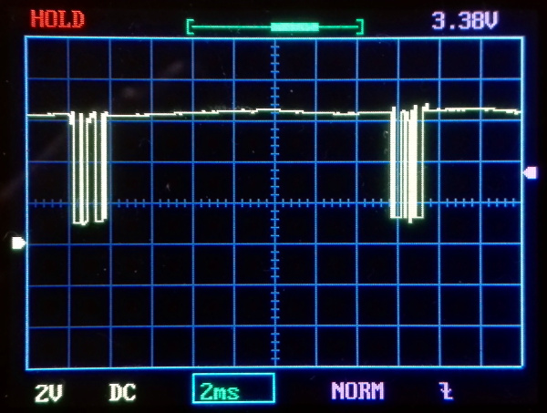Distanza tra due trasmissioni successive del segnale
Per studiare meglio il formato di codifica delle informazioni ho effettuato alcune nuove acquisizioni utilizzando una scala temporale più spinta. Esaminando attentamente le forme d'onda posso dire senza dubbio che ogni cifra viene codificata sempre allo stesso modo, indipendentemente dal fatto che si tratti del set, di una cifra del punteggio o del contaminuti:
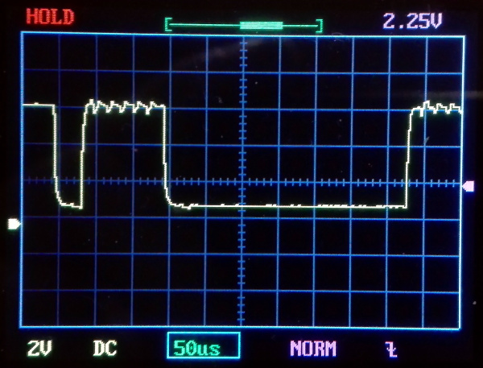Set locali a zero
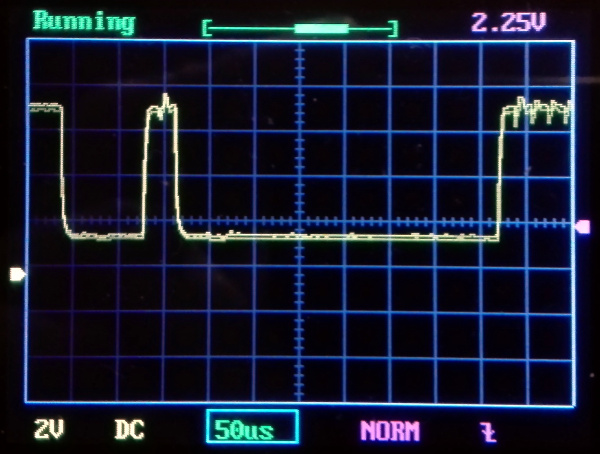Set locali a uno
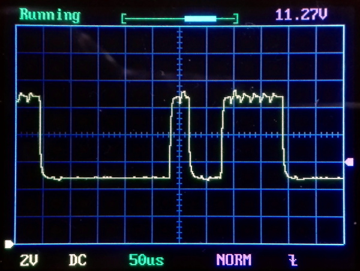Punteggio locali a 10: si riconosono l'uno e lo zero affiancati
Rassicurato dal fatto che probabilmente è sufficiente decodificare le 10 cifre decimali del set locali per ricostruire il significato di tutti gli impulsi del segnale, analizzo le 10 istantanee scattate per ognuna delle dieci cifre del set locali attribuendo un bit ad ogni tacca dell'asse dei tempi (una tacca=50µs). Con poco sforzo ottengo la seguente tabella:
cifra bit ------------------------- 0 00011 11111 1111? 1 00000 00001 11?00 2 0?110 01111 01111 3 0?110 00011 11111 4 00111 10000 11110 5 00111 10011 110?1 6 00111 11111 0011? 7 00000 00001 11111 8 00111 11111 11111 9 00111 10000 1111?
I punti interrogativi indicano delle posizioni per le quali non sono in grado di assegnare con certezza il relativo livello logico. Le cifre 1 e 4 sono le uniche che terminano con uno 0: questo è coerente con le osservazioni fatte riguardo alla coda supplementare del segnale che si presenta quando il set ospiti è impostato a 1 o 4. Potrebbe essere uno stratagemma della consolle per trasmettere lo zero finale al tabellone.
C'è della ridondanza nella tabella, raggruppando i bit a due a due si nota:
cifra bit ------------------------------ 0 00 00 11 11 11 11 11 ? 1 00 00 00 00 01 11 ?0 0 2 0? 11 00 11 11 01 11 1 3 0? 11 00 00 11 11 11 1 4 00 11 11 00 00 11 11 0 5 00 11 11 00 11 11 0? 1 6 00 11 11 11 11 00 11 ? 7 00 00 00 00 01 11 11 1 8 00 11 11 11 11 11 11 1 9 00 11 11 00 00 11 11 ?
Sono quasi tutte coppie di bit uguali; ne prendo perciò uno solo:
cifra bit ----------------------- 0 0 0 1 1 1 1 1 ? 1 0 0 0 0 ? 1 ? 0 2 0 1 0 1 1 ? 1 1 3 0 1 0 0 1 1 1 1 4 0 1 1 0 0 1 1 0 5 0 1 1 0 1 1 ? 1 6 0 1 1 1 1 0 1 ? 7 0 0 0 0 ? 1 1 1 8 0 1 1 1 1 1 1 1 9 0 1 1 0 0 1 1 ?
Basandomi sull'ipotesi del significato attribuito della coda del segnale che si presenta solo per cifre 1 e 4, deduco che tutte le altre debbano necessariamente prevedere un 1 in ultima posizione:
cifra bit ----------------------- 0 0 0 1 1 1 1 1 1 1 0 0 0 0 ? 1 ? 0 2 0 1 0 1 1 ? 1 1 3 0 1 0 0 1 1 1 1 4 0 1 1 0 0 1 1 0 5 0 1 1 0 1 1 ? 1 6 0 1 1 1 1 0 1 1 7 0 0 0 0 ? 1 1 1 8 0 1 1 1 1 1 1 1 9 0 1 1 0 0 1 1 1
Risolvo le altre incertezze analizzando le forme d'onda dei relativi segnali:
cifra bit ----------------------- 0 0 0 1 1 1 1 1 1 1 0 0 0 0 1 1 0 0 ? -> 1, se no l'impulso sarebbe troppo breve /1 1 0 0 0 0 0 1 1 0 ? -> 1, se no l'impulso sarebbe troppo breve /2 2 0 1 0 1 1 0 1 1 ? -> 0, ci sono tre impulsi 3 0 1 0 0 1 1 1 1 4 0 1 1 0 0 1 1 0 5 0 1 1 0 1 1 0 1 ? -> 0, ci sono tre impulsi 6 0 1 1 1 1 0 1 1 7 0 0 0 0 0 1 1 1 ? -> 0, sembra un impulso di ampiezza 3 8 0 1 1 1 1 1 1 1 9 0 1 1 0 0 1 1 1
A conferma della bontà della codifica appena estrapolata ho ricomposto le 10 forme d'onda in un'unica immagine ove ho messo in evidenza la posizione di ogni bit con una banda colorata:
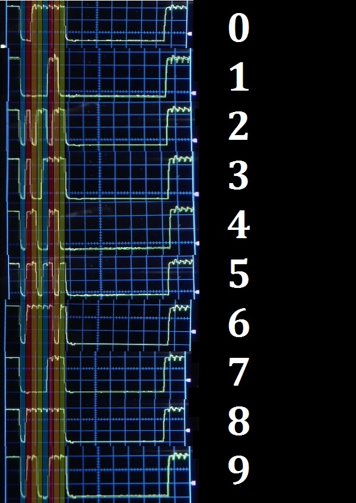Codifica delle cifre decimali
L'immagine composita chiarisce quale sia la corretta codifica dell'1 e suggerisce una correzione a quella del 6:
cifra bit ----------------------- 0 0 0 1 1 1 1 1 1 1 0 0 0 0 0 1 1 0 2 0 1 0 1 1 0 1 1 3 0 1 0 0 1 1 1 1 4 0 1 1 0 0 1 1 0 5 0 1 1 0 1 1 0 1 6 0 1 1 1 1 1 0 1 7 0 0 0 0 0 1 1 1 8 0 1 1 1 1 1 1 1 9 0 1 1 0 0 1 1 1
C'è una logica alla base di questa codifica? Non è una codifica additiva nè booleana: sommando o effettuando l'OR delle codifiche dell'1 del 2 non si ottiene quella del 3. D'un tratto, l'epifania: la codifica dell'8 e dello 0 differiscono per un solo bit, il tabellone monta dei display a sette segmenti… BUM! Vuoi vedere che ogni bit è associato ad un segmento? La nomenclatura standard dei segmenti di un display è la seguente:
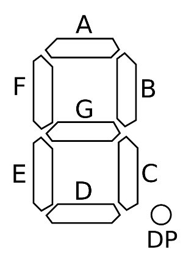Nomenclatura di un display 7 segmenti
Non è difficile a questo punto risalire all'associazione bit/segmento:
bit 0 1 2 3 4 5 6 7 segmento - g f e d c b a
Mi sorge il dubbio che il primo bit, quello che fino a ieri ho considerato il bit di stop sia in realtà un bit di sincronismo oppure il bit di controllo del punto decimale; d'altra parte i display del tabellone, fatta eccezione per il display delle unità dei minuti, ne sono sprovvisti. Sarà opportuno effettuare qualche prova per determinare la reale funzione svolta da questo bit.
I 12 display di cui è dotato il tabellone si susseguono nel segnale nell'ordine:
La sessione di oggi è dedicata all'analisi del controllo del punto lampeggiante che separa i minuti dai secondi. L'oscilloscopio purtroppo ha qualche problema a visualizzare la parte di segnale relativa al contaminuti – quella centrale – nella scala temporale di 50µs: l'auto-trigger non funziona a dovere, evidentemente messo in difficoltà dalla natura del segnale. Ho girato un breve video che mostra il segnale generato dalla consolle durante un conteggio all'indietro a partire dall'orario 16.59. Si nota l'oscillazione a 1Hz del bit tra le unità di minuti e le decine di secondi proprio al centro dello schermo:
È assodato che ogni singolo impulso ha una durata prossima ai 20µs, occupando sull'oscilloscopio due tacche quando la scala temporale è impostata a 50µs. Resta da capire se e quanto ritardo la consolle inserisce tra una cifra e l'altra. Analizzando nel dettaglio la forma d'onda del segnale associato al massimo punteggio locali (199) noto che lo spazio tra lo zero del set locali e il fronte di salita del primo segmento dell'uno delle centinaia del punteggio locali è pari a circa due tacche, cioè 0,2ms/5×2=80µs:
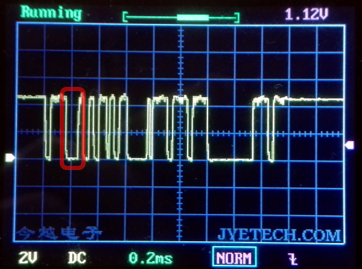Lo spazio tra lo 0 del set e l'1 del punteggio locali
Prima del primo segmento della cifra delle centinaia del punteggio locali ci sono senz'altro altri quattro bit, corrispondenti ai segmenti d, e, f e g del display, la cui durata complessiva è all'incirca 4×20µs=80µs. Sembra dunque che non ci sia spazio per il bit di start che dovrebbe precedere la trasmissione di tale cifra. Comincio a sospettare che il segnale sia costituito da una sequenza di bit senza soluzione di continuità piuttosto che una sequenza assimilabile ad una trasmissione seriale con intercalati i caratteristici bit di start/stop. Potrebbe magari trattarsi di una sequenza tipo:
In totale fa 85 bit, per una durata ipotetica del segnale di 85×20µs=1,70ms. No, il segnale dura di più, poco meno di 2ms. Che si tratti invece di una sequenza di 12 byte con il bit meno significativo non utilizzato, che io ho fino ad ora erroneamente interpretato come bit di start? Se così fosse, la durata del segnale teorica dovrebbe essere pari a 12×8×20µs=1,92ms… potrebbe starci!
Per confermare questa ipotesi ho estratto due quadri all'inizio del filmato precedente in cui si nota l'oscillazione del bit che controlla il punto lampeggiante dell'orologio:
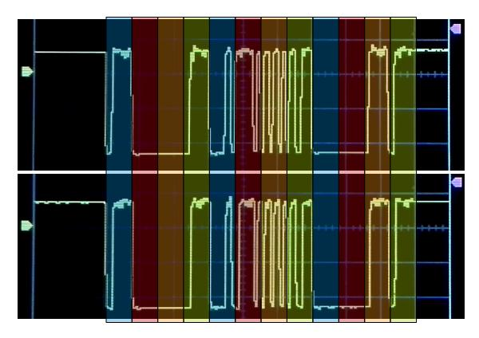Raggruppamento degli impulsi del segnale a gruppi di 8
Si riconoscono, nell'ordine:
Il bit che controlla il separatore lampeggiante è quello meno significativo (restando nell'ottica di una trasmissione lsb-first) del sesto byte, quello associato alla cifra delle unità di minuti.
Credo oramai di essere in possesso di tutte le informazioni necessarie per riuscire a ricostruire il segnale generato dalla consolle con Arduino; mi preparo perciò a sviluppare una prima versione del firmware:
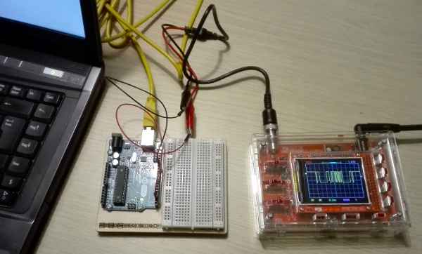Circuito per l'analisi dei segnali prodotti da Arduino
Ecco quindi uno sketch che riproduce il segnale sull'uscita digitale 2 di Arduino:
[file sps-hc20.ino]
const int TX_PIN = 2;
const int BIT_WIDTH = 14; // microseconds (us)
// should be 20, but we must take into account
// the digitalWrite function execution time
const int TX_PERIOD = 15; // milliseconds (ms)
const int BUFFER_SIZE = 12;
uint8_t tx_buffer[BUFFER_SIZE]; // data to be transmitted to the SPS HC20
unsigned long last_tx_time = 0;
void setup()
{
pinMode(TX_PIN, OUTPUT);
digitalWrite(TX_PIN, HIGH);
tx_buffer[ 0] = 0x3f; // 0
tx_buffer[ 1] = 0x00; //
tx_buffer[ 2] = 0x00; //
tx_buffer[ 3] = 0x3f; // 0
tx_buffer[ 4] = 0x06; // 1
tx_buffer[ 5] = 0xfd; // 6.
tx_buffer[ 6] = 0x6d; // 5
tx_buffer[ 7] = 0x6f; // 9
tx_buffer[ 8] = 0x00; //
tx_buffer[ 9] = 0x00; //
tx_buffer[10] = 0x3f; // 0
tx_buffer[11] = 0x3f; // 0
}
void transmit_bit(int value)
{
if (value)
digitalWrite(TX_PIN, HIGH);
else
digitalWrite(TX_PIN, LOW);
delayMicroseconds(BIT_WIDTH);
}
void transmit_byte(uint8_t value)
{
for (int i = 0; i < 8; i++)
transmit_bit(value & (0x80 >> i));
}
void transmit_buffer(const uint8_t* buffer, int size)
{
for (int i = 0; i < size; i++)
transmit_byte(buffer[i]);
}
void loop()
{
unsigned long curr_time = millis();
if (curr_time - last_tx_time >= TX_PERIOD) {
transmit_buffer(tx_buffer, BUFFER_SIZE);
digitalWrite(TX_PIN, HIGH);
last_tx_time = curr_time;
}
}
Qui il file sorgente scaricabile
Per ragioni di praticità ho deciso di inviare per primo il bit più significativo di ogni byte, associando al segmento g il bit in posizione 7 e al segmento a quello in posizione 0. In questo modo i bit compaiono nel segnale nello stesso ordine in cui si trovano all'interno del byte, rendendo più semplice l'interpretazione del segnale stesso.
Ho ricavato sperimentalmente il valore della costante BIT_WIDTH: 14 è il valore che realizza la larghezza di bit più vicina a quella reale (20µs). Se la temporizzazione non si dimostrerà corretta, potrò comunque aggiustarla a suon di nop (la frequenza di clock del microcontrollore di Arduino è 16MHz, quindi ogni istruzione dovrebbe introdurre un ritardo di 62,5ns). Il segnale ricostruito artificialmente sembra a prima vista promettente:
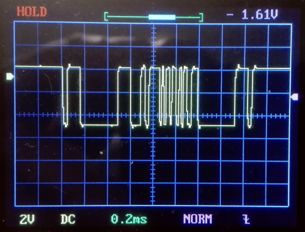Il segnale in uscita da Arduino
Resta ora da capire come interfacciare Arduino al tabellone: basterà collegare la massa sul terminale 2 della presa RJ25 e l'uscita digitale sul terminale 3? Dovrò cortocircuitare i terminali 2 e 5 della presa? Servirà un adattatore di impedenza o un circuito di protezione?
Prima di collegare il tabellone ad Arduino, ho nuovamente verificato lo stato elettrico dei terminali 2, 3 e 5 della presa RJ25 con la consolle in modalità OD: su tutte le coppie di terminali l'oscilloscopio mostra solo del rumore; finché non commuto su SPS, i terminali 2 e 5 non sono in corto, e sul 3 non viene trasmesso nulla.
Armato di coraggio, ho dapprima collegato la linea di massa di Arduino sul terminale 2 della presa, e l'uscita digitale sul 3: il tabellone continua a mostrare la data e l'ora. Mettendo a massa anche il terminale numero 5 si è acceso qualche segmento a caso, qua e là. Ogni volta che tolgo e rimetto lo spinotto del cavo del tabellone nella presa RJ25 la configurazione del tabellone cambia: la maggior parte dei segmenti accesi appartiene ai display nell'orologio, a volte si accende il segmento g del set degli ospiti. I display dei punteggi sono sempre rimasti spenti. Cosa sta succedendo? Visto all'oscilloscopio, il segnale inviato al tabellone è irriconoscibile:
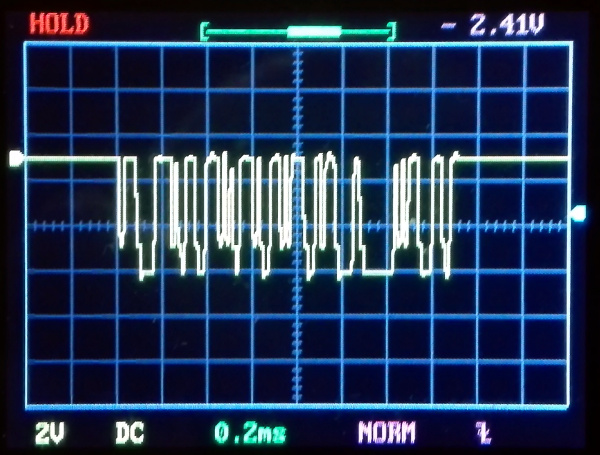Il segnale sul pin 2 di Arduino a tabellone collegato
Purtroppo non ho tempo per altre prove, devo lasciare la palestra. Ho ripristinato il circuito a casa, e la forma d'onda generata da Arduino è nuovamente quella che mi ricordavo. Come si spiega?!
Le ipotesi circa la distorsione del segnale abbondano: rumore elettromagnetico in palestra? Potrei provare a schermare il circuito… Disturbi generati dal tabellone? Una resistenza di pull-up/pull-down sull'uscita di Arduino potrebbe forse aiutare… Una richiesta di corrente troppo elevata? Arduino può erogare al max 40mA (anche se è sconsigliato superare i 20mA); potrei pilotare il tabellone con un driver… Impedenza e/o capacità parassita del cavo critiche, considerato che è piuttosto lungo? Non ne ho la più pallida idea…
Ho provato a simulare una richiesta di corrente esagerata su Arduino. Per non rischiare di bruciare il microcontrollore, ho inserito una resistenza limitatrice in serie al potenziometro regolatore che userò per variare il carico resistivo sull'uscita di Arduino così da poter modulare a piacere la richiesta di corrente. Essendo Rmin=VCC/Imax, sostituendo VCC=5V e Imax=50mA ottengo Rmin=100Ω (250mW):
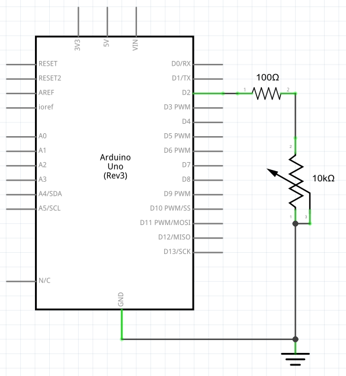Il circuito di verifica della tenuta in corrente di Arduino
Una volta configurato il circuito con il cursore del potenziometro nella posizione di massima resistenza, ho acceso Arduino e verificato con l'oscilloscopio che il segnale sull'uscita digitale fosse quello atteso. Diminuendo progressivamente il carico non ho notato alcuna modifica della forma d'onda, almeno inizialmente. Solo nei pressi della posizione di minima resistenza l'ampiezza del segnale si è abbassata di circa 1V, ma la forma d'onda è rimasta stabile. Nemmeno l'aggiunta di un condensatore in parallelo all'uscita – 100pF prima, 100nF poi – ha alterato in modo percettibile il segnale. Sto esaurendo le idee, e con esse l'entusiasmo…
Ho sottoposto la questione della distorsione del segnale ad un amico esperto elettronico, il quale mi consiglia di provare a mettere in serie all'uscita di Arduino una resistenza da 50/100Ω, ritenendo che i disturbi che ho registrato possano essere dovuti a riflessioni del segnale sulla linea.
Una resistenza in serie da 50Ω ha sortito l'effetto sperato:
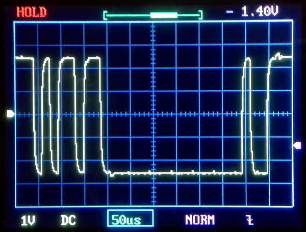Il segnale dopo l'aggiunta della resistenza di terminazione – grazie Mau!
Confrontando l'ampiezza del segnale a monte e a valle della resistenza di terminazione deduco che sulla stessa si verifica una caduta di tensione di circa 0,6V, ragion per cui la corrente che vi scorre è dell'ordine dei 10mA. La caduta di tensione non dovrebbe rappresentare un problema per il tabellone (un circuito CMOS interpreta come livello alto qualunque tensione sopra i 3V, per un TTL la soglia si abbassa addirittura a 2V), e il valore di corrente è perfettamente compatibile con le caratteristiche di Arduino.
Se ho capito bene, la resistenza di terminazione, il cui scopo è eliminare le riflessioni del segnale, è necessaria solo se la durata dell'impulso più breve è inferiore di 10 volte il tempo di propagazione del segnale sulla linea; se la durata dell'impulso è tale da consentire allo stesso di stabilizzarsi sul conduttore su cui sta viaggiando, le riflessioni non si verificano.
La velocità di propagazione di un segnale elettrico in un tipico conduttore di rame è pari a 2/3 della velocità della luce; essendo nel mio caso il cavo lungo 20m, il tempo di propagazione di un segnale al suo interno è all'incirca 20/(0,66×3E8)=100ns. L'impulso più breve che si può presentare dura 20µs, cioè circa 200 volte il tempo di propagazione: a rigor di logica la resistenza di terminazione non dovrebbe essere strettamente necessaria. Va detto che la lunghezza del cavo è una stima fatta ad occhio – anche se non credo di aver sbagliato di un fattore 200! –, inoltre non conosco le caratteristiche elettriche del cavo, che oltretutto è costituito da 6 conduttori non schermati. Forse parte della responsabilità è attribuibile al circuito di ingresso del tabellone, la cui impedenza non ho potuto misurare perché non ho mai avuto modo di spegnerlo. Sta di fatto che il problema pare risolto!
Nonostante la forma d'onda del segnale sia conforme a quella generata dalla consolle, sul tabellone continuano ad illuminarsi segmenti a caso esattamente come accadeva con il segnale distorto. La configurazione resta stabile e cambia solo quando si scollega e ricollega il tabellone ad Arduino. Ho provato a modificare la durata del singolo bit nell'intervallo 18÷20µs con continuità a passi di 62,5ns per volta, senza mai notare alcun miglioramento. Che la comunicazione tra consolle e tabellone sia sincrona, e mi sia sfuggita la presenza di qualche segnale di clock? Alla prossima occasione condurrò un'analisi più approfondita in merito.
Sapendo che i terminali numero 2 e 5 portano il segnale di massa ho ristretto il campo d'analisi a 5 coppie di conduttori, usando il primo come riferimento. Dopo essermi assicurato che la consolle è in modalità OD e aver collegato il puntale di massa dell'oscilloscopio al terminale 2 della presa RJ25, ho osservato:
I picchi spurii presenti sul terminale numero 4
Per la prima volta mi sono reso conto della regolarità con cui si presentano questi picchi che fino ad ora ho battezzato come “spurii”: distano all'incirca quattro tacche tra loro, ovvero circa 16ms, tanto quanto le trasmissioni del segnale di controllo! Allargando la scala dei tempi scopro quello che sembra a tutti gli effetti un segnale di sincronismo:
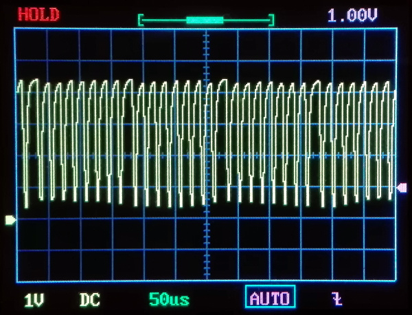Il segnale di sincronismo
Non ho avuto modo di catturare il segnale di sincronismo nella sua completezza, anche stasera il tempo è volato. Credo di poter concludere già adesso che il segnale di clock si presenta in concomitanza con il treno di impulsi di comando del tabellone, altrimenti non avrei visto le pause di 16ms nella prima cattura. Non so di quanti impulsi sia costituito (immagino e spero 96, tanti quanti i bit trasmessi) e quale sia la logica sottostante: comanderà il fronte di salita o quello di discesa? Un impulso ogni otto è più lungo degli altri, probabilmente comprende il tempo che la consolle impiega per preparare/recuperare/caricare il byte da serializzare. Dovrò tenerne conto nella ricostruzione di questo segnale che farò con Arduino?
Un nuovo dubbio mi assale: il clock è generato dal tabellone o dalla consolle? La mia speranza è che sia la consolle a generarlo, per me sarebbe più facile riprodurre quel tipo di segnale piuttosto che sincronizzare la costruzione del treno di impulsi del segnale di controllo con un clock esterno. Non so nemmeno se Arduino ha le risorse per realizzare (e io le capacità di concepire) un firmware in grado di stare al passo con un clock così veloce – 3 impulsi per tacca vuol dire una frequenza approssimativa di 3/50µs=60KHz.
In realtà sembra che la modalità direct port di Arduino consenta di effettuare delle letture sulle porte digitali al ritmo di una ogni microsecondo:
What these values tell me, is that we can do about:
- 10 analog 10-bit readings per millisecond with analogRead()
- 128 pwm settings per millisecond with analogWrite()
- 220 pin reads per millisecond with digitalRead()
- 224 pin writes per millisecond with digitalWrite()
- 1056 pin reads per millisecond with direct port reads
- 1059 pin writes per millisecond with direct port writes
Fonte: JEELABS - Pin I/O performance
Non per fasciarmi la testa, ma una soluzione alternativa potrebbe essere quella di agganciare al segnale di clock esterno un'interruzione (maggiori informazioni a riguardo si trovano nella documentazione e in questa interessante dissertazione).
Il tabellone non genera il clock, nè con i terminali 2/5 aperti, nè quando cortocircuitati. L'ho verificato analizzando i segnali presenti sullo spinotto del cavo che arriva dal tabellone, a consolle scollegata. Appurato che il segnale di sincronismo appare solo a consolle collegata e solo quando l'interruttore è in posizione SPS (su OD la linea rimane bassa), concludo a questo punto che è la consolle a generarlo. La prova definitiva potrei ottenerla alimentando la consolle attraverso i terminali 1/2, mettendola in modalità SPS e verificando la presenza del segnale di clock sul terminale 4. Mi manca però l'attrezzatura adatta per iniettare solo l'alimentazione nella presa DSUB della consolle. Decido quindi di fidarmi di questa intuizione e di proseguire con lo studio del segnale di sincronismo per poterlo replicare con Arduino.
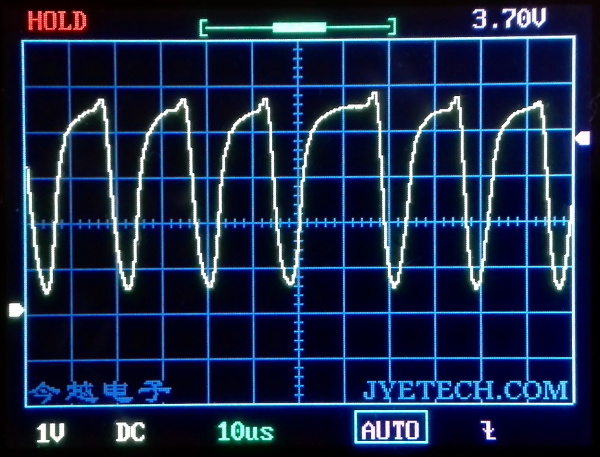Il segnale di sincronismo alla massima risoluzione consentita dall'oscilloscopio
In attesa di completare il circuito di controllo del tabellone ho realizzato un emulatore che ricostruisce lo stato dei display a partire da una sequenza di 12 byte (gli indicatori dei timeout, dei 7 falli e il punto lampeggiante dell'orologio non sono supportati):
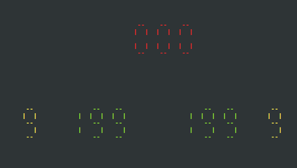L'emulatore in funzione in una finestra di terminale di Ubuntu
L'emulatore è un programma Python in modalità testuale che fa uso della libreria ncurses, e per questa ragione non funziona su Windows. Qui il file sorgente scaricabile.
Prosegue l'analisi del segnale di sincronismo. La sequenza completa è costituita da 7 impulsi brevi seguiti da uno lungo, il tutto ripetuto per 11 volte, più altri 7 impulsi brevi: 95 impulsi in tutto. Gli impulsi brevi hanno una durata approssimativa di 18µs, quello lungo 24µs. Il duty-cycle è di gran lunga maggiore del 50%.
Quand'è che il tabellone acquisisce il livello logico del segnale? Sul fronte di discesa? Sul livello basso? Sul fronte di salita? Sul livello alto? Il fatto che quando il segmento g del display del set ospiti è spento (ultimo bit del treno di impulsi a 0) il segnale presenti una coda che si protrae per una durata equivalente a svariati impulsi mi spinge a pensare che l'acquisizione avvenga sul fronte di salita o sul livello alto. D'altra parte, essendo la linea normalmente a livello alto, opterei per il fronte di salita.
A proposito della presunta memoria del sistema: forse non c'è nessuna memoria, è semplicemente un effetto collaterale del mancato spegnimento del tabellone che per questo motivo mantiene internamente l'ultimo stato acquisito prima che la consolle venisse scollegata.
Relativamente al segnale di sincronismo: a ulteriore prova del fatto che il clock non arriva dal tabellone bisogna tener presente che durante le prove effettuate con Arduino la configurazione dei segmenti accesi era sì causale, ma stabile. Fosse stato il tabellone a generare il clock avrei dovuto vedere i segmenti accendersi e spegnersi in sequenza casuale, considerato che Arduino stava generando un segnale variabile sulla linea preposta.
Ho provato a sovrapporre il segnale di controllo con quello di sincronismo con un programma per l'elaborazione di immagini (l'oscilloscopio che sto usando purtroppo non è multi-traccia). Ammesso e non concesso che i due segnali siano sincronizzati sul primo fronte di discesa, l'ipotesi che il campionamento avvenga sul fronte di salita prende corpo. La corrispondenza delle creste del segnale con gli impulsi di clock mi fa pensare che l'ipotesi della sincronizzazione sul primo fronte di discesa non sia del tutto campata in aria.
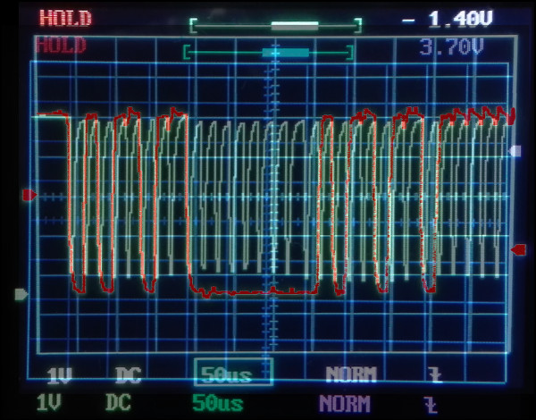Il segnale di controllo (rosso) sovrapposto al clock (giallo)
Ho quindi modificato lo sketch in modo da includere anche la generazione del segnale di sincronismo. Dovendo pilotare due uscite digitali allo stesso tempo (il primo fronte di discesa deve presentarsi simultaneamente sul segnale di controllo e sul clock), ho sostituito la chiamata digitalWrite – che opera su una uscita alla volta – con un accesso diretto alle porte d'uscita di Arduino, secondo il cosiddetto direct port manipulation che consente invece di impostare il livello elettrico di più porte contemporaneamente:
[file sps-hc20.ino]const int TX_PIN = 2;const int DATA_PIN = 0x04; // digital pin 2 const int SYNC_PIN = 0x08; // digital pin 3 const int BIT_WIDTH =1418; // microseconds (us) const unsigned int INTERBYTE_GAP = 6; // microseconds (us) const intTX_PERIODINTERPACKET_GAP = 15; // milliseconds (ms) const int BUFFER_SIZE = 12; uint8_t tx_buffer[BUFFER_SIZE]; // data to be transmitted to the SPS HC20 unsigned long last_tx_time = 0; void setup() {pinMode(TX_PIN, OUTPUT); digitalWrite(TX_PIN, HIGH);// set DATA_PIN & SYNC_PIN as output DDRD |= DATA_PIN | SYNC_PIN; // assert DATA & SYNC lines PORTD |= DATA_PIN | SYNC_PIN; tx_buffer[ 0] = 0x3f; // 0 tx_buffer[ 1] = 0x00; // tx_buffer[ 2] = 0x00; // tx_buffer[ 3] = 0x3f; // 0 tx_buffer[ 4] = 0x06; // 1 tx_buffer[ 5] = 0xfd; // 6. tx_buffer[ 6] = 0x6d; // 5 tx_buffer[ 7] = 0x6f; // 9 tx_buffer[ 8] = 0x00; // tx_buffer[ 9] = 0x00; // tx_buffer[10] = 0x3f; // 0 tx_buffer[11] = 0x3f; // 0 } void transmit_bit(int value) { // set the DATA line if (value)digitalWrite(TX_PIN, HIGH);PORTD |= DATA_PIN; elsedigitalWrite(TX_PIN, LOW);PORTD &= ~DATA_PIN;delayMicroseconds(BIT_WIDTH);// generate the SYNC pulse PORTD &= ~SYNC_PIN; delayMicroseconds(BIT_WIDTH / 2); PORTD |= SYNC_PIN; delayMicroseconds(BIT_WIDTH / 2); } void transmit_byte(uint8_t value) { for (int i = 0; i < 8; i++) transmit_bit(value & (0x80 >> i)); delayMicroseconds(INTERBYTE_GAP); } void transmit_buffer(const uint8_t* buffer, int size) { for (int i = 0; i < size; i++) transmit_byte(buffer[i]); } void loop() { unsigned long curr_time = millis(); if (curr_time - last_tx_time >=TX_PERIODINTERPACKET_GAP) { transmit_buffer(tx_buffer, TX_BUFFER_SIZE);digitalWrite(TX_PIN, HIGH);// assert DATA & SYNC lines PORTD |= DATA_PIN | SYNC_PIN; last_tx_time = curr_time; } }
Qui il file sorgente scaricabile
Poiché l'accesso diretto alle porte di input/output di Arduino è più efficiente della chiamata digitalWrite, per ottenere le temporizzazioni corrette dei segnali ho dovuto aumentare il valore della costante BIT_WIDTH da 14 a 18.
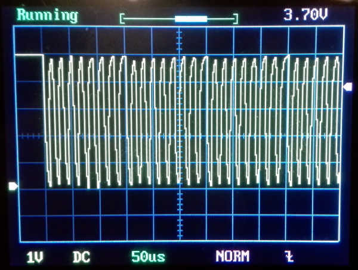Il segnale di sincronismo sull'uscita digitale 3 di Arduino
Dovesse funzionare, devo ricordarmi di verificare l'effetto del bit più significativo di ogni byte, quello che fino ad ora ho visto sempre a zero, se escludo quello del sesto byte che controlla il punto lampeggiante dell'orologio. In via precauzionale penso sia meglio attivarli per un breve periodo di tempo, c'è il rischio (la speranza?) di far suonare la sirena.
Avendo trovato un po' di tempo libero ho pensato di approfittarne per estendere il firmware in modo da poter inviare la configurazione da trasferire al tabellone, che ora è cablata all'interno della funzione setup, attraverso la porta seriale. Inizialmente ho optato per un trasferimento diretto dei 12 byte dal PC verso Arduino, ma durante i test mi sono accorto che a volte uno o più byte venivano persi per strada, con il risultato che la configurazione finiva per occupare una posizione sbagliata all'interno del buffer di trasmissione. Ho deciso allora di aggiungere due byte di controllo, un STX (codice ASCII 0x02) all'inizio e un ETX (codice ASCII 0x03) in coda al pacchetto. All'avvio il codice di ricezione si mette in attesa di un STX; non appena arriva, inzia a riempire il buffer di ricezione e verifica che, una volta riempito, il byte successivo che viene ricevuto sia un ETX. Se tutto è andato come previsto il contenuto del buffer di ricezione viene copiato in quello di trasmissione, in modo che la nuova configurazione venga subito inviata al tabellone; viceversa la ricezione viene annullata, il buffer di ricezione svuotato, e ci si rimette in attesa del successivo STX, ignorando qualunque altro byte eventualmente ricevuto. Nel primo caso viene emesso un carattere di ACK (codice ASCII 0x06) per segnalare la corretta ricezione del pacchetto di dati, un NAK (codice ASCII 0x15) in caso di errore.
Attenzione: Arduino invia la risposta ACK/NAK al riempimento del buffer di ricezione: nel caso venga perso un byte, il NAK verrà inviato in corrispondenza del primo byte del pacchetto successivo. Il programma di comunicazione dovrà quindi tener conto del fatto che la risposta potrebbe non giungere una volta completato il trasferimento del pacchetto, bensì più tardi.
[file sps-hc20.ino]
const int DATA_PIN = 0x04; // digital pin 2
const int SYNC_PIN = 0x08; // digital pin 3
const int BIT_WIDTH = 18; // microseconds (us)
const unsigned int INTERBYTE_GAP = 6; // microseconds (us)
const int INTERPACKET_GAP = 15; // milliseconds (ms)
const uint8_t STX = 0x02;
const uint8_t ETX = 0x03;
const uint8_t ACK = 0x06;
const uint8_t NAK = 0x15;
const int TX_BUFFER_SIZE = 12;
const int RX_BUFFER_SIZE = TX_BUFFER_SIZE + 2; // STX, ETX
uint8_t rx_buffer[RX_BUFFER_SIZE]; // data received from the host
uint8_t tx_buffer[TX_BUFFER_SIZE]; // data to be transmitted to the SPS HC20
int rx_buffer_pos = 0;
unsigned long last_tx_time = 0;
void setup()
{
// set DATA_PIN & SYNC_PIN as output
DDRD |= DATA_PIN | SYNC_PIN;
// assert DATA & SYNC lines
PORTD |= DATA_PIN | SYNC_PIN;
// enable serial communication
Serial.begin(57600);
// set the initial display configuration
tx_buffer[ 0] = 0x3f; // 0
tx_buffer[ 1] = 0x00; //
tx_buffer[ 2] = 0x00; //
tx_buffer[ 3] = 0x3f; // 0
tx_buffer[ 4] = 0x06 0x00; // 1
tx_buffer[ 5] = 0xfd 0x3f; // 6. 0
tx_buffer[ 6] = 0x6d 0x3f; // 5 0
tx_buffer[ 7] = 0x6f 0x3f; // 9 0
tx_buffer[ 8] = 0x00; //
tx_buffer[ 9] = 0x00; //
tx_buffer[10] = 0x3f; // 0
tx_buffer[11] = 0x3f; // 0
}
void transmit_bit(int value)
{
// set the DATA line
if (value)
PORTD |= DATA_PIN;
else
PORTD &= ~DATA_PIN;
// generate the SYNC pulse
PORTD &= ~SYNC_PIN;
delayMicroseconds(BIT_WIDTH / 2);
PORTD |= SYNC_PIN;
delayMicroseconds(BIT_WIDTH / 2);
}
void transmit_byte(uint8_t value)
{
for (int i = 0; i < 8; i++)
transmit_bit(value & (0x80 >> i));
delayMicroseconds(INTERBYTE_GAP);
}
void transmit_buffer(const uint8_t* buffer, int size)
{
for (int i = 0; i < size; i++)
transmit_byte(buffer[i]);
}
void loop()
{
while (Serial.available()) {
uint8_t byte = Serial.read();
if ((rx_buffer_pos == 0) && (byte != STX))
// wait for the next STX
continue;
rx_buffer[rx_buffer_pos++] = byte;
if (rx_buffer_pos == RX_BUFFER_SIZE) {
if (byte == ETX) {
// rx buffer is full
Serial.write(ACK);
break;
}
else {
// discard read data and start again
rx_buffer_pos = 0;
Serial.write(NAK);
}
}
}
if (rx_buffer_pos == RX_BUFFER_SIZE) {
memcpy(tx_buffer, rx_buffer + 1, TX_BUFFER_SIZE);
rx_buffer_pos = 0;
}
unsigned long curr_time = millis();
if (curr_time - last_tx_time >= INTERPACKET_GAP) {
transmit_buffer(tx_buffer, TX_BUFFER_SIZE);
// assert DATA & SYNC lines
PORTD |= DATA_PIN | SYNC_PIN;
last_tx_time = curr_time;
}
}
Qui il file sorgente scaricabile
Ho sottoposto il circuito ad uno stress-test con un semplice script Python che ripete ciclicamente per un'ora un conteggio da zero a nove sul display del set locali:
[file stress-test.py]
import serial
import time
STX = '\x02'
ETX = '\x03'
ACK = '\x06'
NAK = '\x15'
period = .02 # 20ms
packets = [
'\x3f\x00\x00\x00\x00\x00\x00\x00\x00\x00\x00\x00',
'\x06\x00\x00\x00\x00\x00\x00\x00\x00\x00\x00\x00',
'\x5b\x00\x00\x00\x00\x00\x00\x00\x00\x00\x00\x00',
'\x4f\x00\x00\x00\x00\x00\x00\x00\x00\x00\x00\x00',
'\x66\x00\x00\x00\x00\x00\x00\x00\x00\x00\x00\x00',
'\x6d\x00\x00\x00\x00\x00\x00\x00\x00\x00\x00\x00',
'\x7d\x00\x00\x00\x00\x00\x00\x00\x00\x00\x00\x00',
'\x07\x00\x00\x00\x00\x00\x00\x00\x00\x00\x00\x00',
'\x7f\x00\x00\x00\x00\x00\x00\x00\x00\x00\x00\x00',
'\x6f\x00\x00\x00\x00\x00\x00\x00\x00\x00\x00\x00',
]
successes = 0
errors = 0
timeouts = 0
with serial.Serial('/dev/ttyACM0', 57600, timeout=.001) as port:
time.sleep(2)
start_time = time.time()
for _ in xrange(int(1. / period) * 60 * 5 / len(packets)):
for packet in packets:
tx_time = time.time()
port.write(STX + packet + ETX)
response = port.read()
if response == ACK:
successes += 1
elif response == NAK:
errors += 1
else:
timeouts += 1
while time.time() < tx_time + period:
time.sleep(0.001)
elapsed_time = time.time() - start_time
print "successes....", successes
print "errors.......", errors
print "timeouts.....", timeouts
print "elapsed(s)...", elapsed_time
A parte una manciata di errori di timeout all'inizio del test, in concomitanza con l'apertura della porta seriale, non sono stati registrati errori di sorta. Gli errori di comunicazione iniziali sono dovuti al fatto che all'apertura della porta seriale la libreria pyserial attiva momentaneamente la linea DTR (cosa di per sè corretta) che come effetto collaterale causa il reset di Arduino. Se la cosa dovesse risultare fastidiosa basta introdurre una breve pausa tra l'apertura della porta e la prima write. Soluzioni software multipiattaforma del problema non ce ne sono, mentre esistono delle alternative hardware che inibiscono il reset di Arduino apportando delle piccole modifiche alla scheda stessa.
Sembra proprio che il campionamento avvenga sul fronte di salita! Ecco lo stato del tabellone dopo aver inviato la configurazione «2__34507__90»:
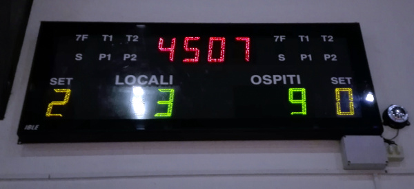La prima configurazione caricata con successo sul tabellone
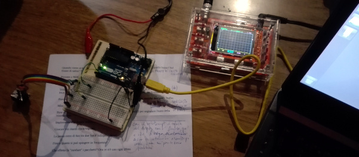Il circuito utilizzato: sulla breadboard sono montate le due resistenze di terminazione
Sulla memoria c'è qualcosa che non mi torna: quando collego la consolle al tabellone, la vecchia configurazione appare anche sul display a cristalli liquidi della consolle. È dunque la consolle che conserva i dati o è il tabellone che glieli trasmette? Questa seconda ipotesi mi preoccupa un po' perché non ho mai considerato che il tabellone potesse inviare dei dati alla consolle e il circuito di interfaccia non ne tiene conto. Mi riprometto di fare il seguente esperimento:
Una considerazione circa il firmware: il trasferimento dei dati dal buffer di trasmissione verso il tabellone avviene con le interruzioni abilitate: potrebbe accadere che l'invio venga temporaneamente interrotto dal ricevimento di uno o più caratteri dalla porta seriale, che viene gestita attraverso una ISR. Alla prova dei fatti proteggere l'invio dell'intero buffer o anche del singolo byte disabilitando le interruzioni ha un effetto deleterio sull'aggiornamento del tabellone: un banale conteggio ciclico realizzato sul set locali da zero a nove al ritmo di uno scatto ogni mezzo secondo perdeva più di qualche cifra:
0 1 2 2 4 5 5 5 8 9 0 0 2…
Per togliermi ogni dubbio circa l'effetto delle interruzioni sulla trasmissione verso il tabellone ho lanciato una versione ridotta dello stress-test (15000 trasmissioni intervallate di 20ms con un timeout in lettura di 1ms) con tre firmware diversi: con le interruzioni abilitate, con la protezione della trasmissione dell'intero buffer e quella del singolo byte. Ho raccolto i risultati nella tabella sottostante:
| Risultato | Protezione | ||
|---|---|---|---|
| Nessuna | Intero Buffer | Singolo Byte | |
| successes | 14999 | 12371 | 14999 |
| errors | 0 | 1173 | 0 |
| timeouts | 1 | 1456 | 1 |
| elapsed(s) | 309 | 310 | 310 |
Con le interruzioni abilitate tutte le animazioni che ho provato si sono dimostrate fluide, anche quelle più spinte (20Hz e più). Ho deciso perciò di non disabilitarle. Evidentemente la stabilità in frequenza del clock non è un requisito del tabellone, che probabilmente si limita a campionare il segnale sul fronte di salita degli impulsi del segnale di sincronismo senza tener conto della loro durata o della loro spaziatura temporale.
La prima animazione riprodotta dal tabellone
Ho provato quindi ad attivare i bit più significativi dei 12 byte, uno alla volta, sperando di riuscire ad accendere gli indicatori dei 7 falli e dei timeout. Nessuno degli indicatori è associato a uno di questi bit, ma ho scoperto che quello del quarto byte comanda la sirena! Gli indicatori dei 7 falli e dei timeout sono invece comandati dai bit non utilizzati dei byte associati al display della cifra delle centinaia dei punteggi:
| Bit | Locali | Ospiti |
|---|---|---|
| 0 | - | - |
| 1 | segmento b | segmento b |
| 2 | segmento c | segmento c |
| 3 | - | - |
| 4 | timeout 2 | 7 falli |
| 5 | timeout 1 | timeout 2 |
| 6 | 7 falli | timeout 1 |
| 7 | - | - |
Ho effettuato la prova per determinare chi si occupa di mantenere l'ultima configurazione del sistema. Collegata la consolle al tabellone in modalità OD, sul suo display appare la configurazione «0_34_000_280»; commuto in SPS e questi dati appaiono sul tabellone. Collego il tabellone ad Arduino e subito questo mostra la nuova configurazione «2__34507__90». Riattacco la consolle, sempre in modalità OD, e sul display ritrovo la configurazione «0_34_000_280». Sposto l'interruttore su SPS e la stessa appare nuovamente sul tabellone. Concludo quindi che è la consolle ad avere la memoria, ed escludo l'eventualità di una trasmissione dal tabellone verso la consolle.
Ho approfittato per sostituire le resistenze da 56Ω con due da 33Ω, per limitare la caduta di tensione. Ora si è ridotta a 0,4V circa, per un valore di corrente di poco superiore ai 12mA.
Su consiglio dell'amico esperto elettronico ho interposto un driver tra le uscite digitali di Arduino e le resistenze di terminazione, a protezione del microcontrollore. Ho aggiunto anche due resistenze di pull-up per forzare un livello alto sulle linee in uscita durante il transitorio iniziale, dato che all'accensione tutti i terminali digitali di Arduino sono configurati come pin di ingresso:
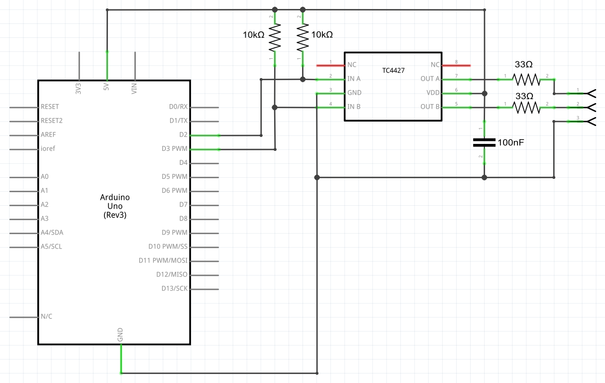Lo schema elettrico del circuito finale
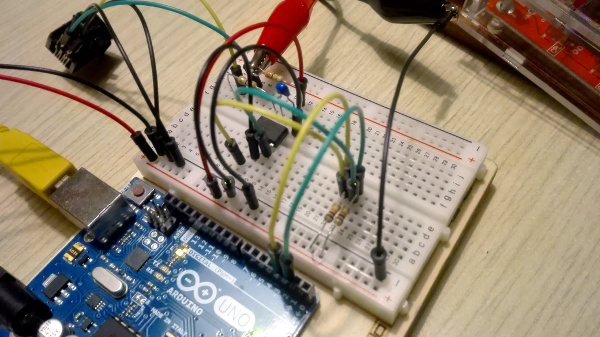Il circuito di prova montato sulla breadboard
Oggi ho preparato una versione semi-definitiva del circuito cablandolo su una basetta millefori. La disposizione è tale per cui può essere montata sulla scheda di Arduino alla stregua dei tanti shield che si trovano in commercio:
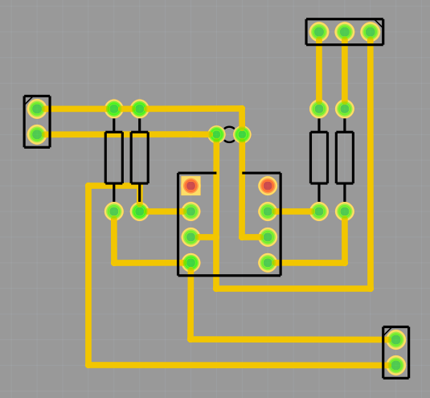Lo sbroglio del circuito di interfaccia
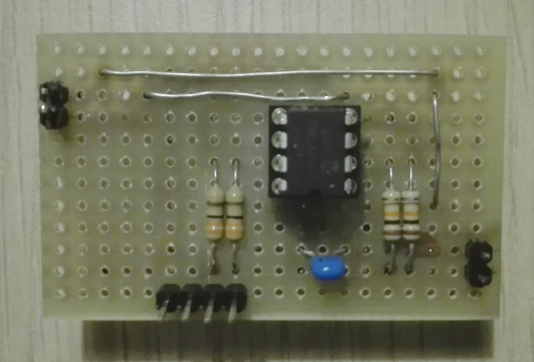Il lato componenti del circuito
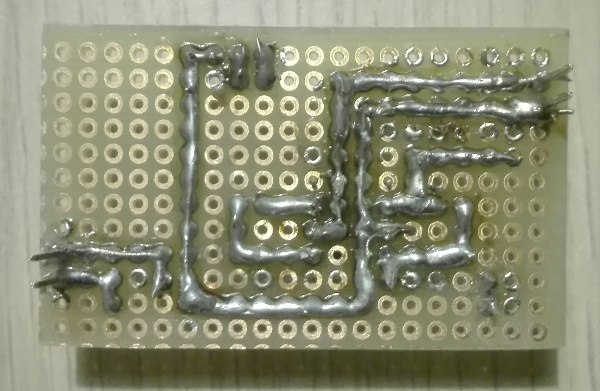Il lato piste del circuito
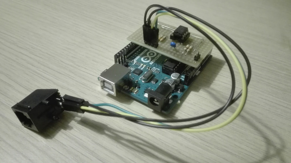Il circuito montato sulla scheda Arduino
Dopo aver simulato due partite complete durante gli ultimi allenamenti e constatato l'apparente assenza di qualunque tipo di problema, ho racchiuso il circuito un una scatola predisposta per ospitare la scheda Arduino con l'Ethernet Shield, perfettamente compatibile con le dimensioni del circuito che ho montato qualche giorno fa. Ho incollato la presa RJ25 al contenitore superiore con della resina bicomponente epossidica, aggiungendo successivamente della colla a caldo come riempitivo:
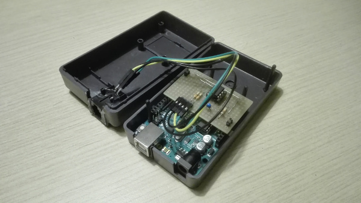Il circuito all'interno della scatola
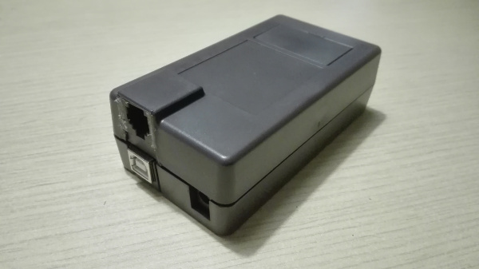L'aspetto esteriore del circuito d'interfaccia
Mi rendo conto solo ora di aver tralasciato un aspetto fortunatamente non fondamentale per lo scopo per cui ho realizzato il circuito d'interfaccia, ovvero l'impostazione della data e dell'ora mostrata dal tabellone. Poco male, per adesso mi fermo qui; ho comunque acquisito il completo controllo del segnapunti da PC, che era l'obiettivo che mi ero prefissato all'inizio.
Aggiornamento [16/04/2018]
Il repository https://bitbucket.org/gzuliani/sps-hc20 contiene i sorgenti Python di un paio di programmi che sfruttano il circuito realizzato per pilotare il tabellone.
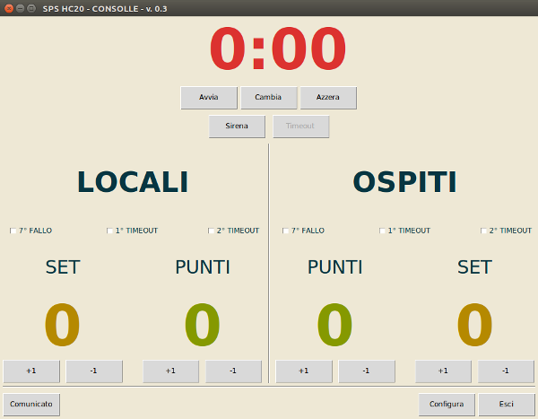«Consolle», programma di controllo del tabellone
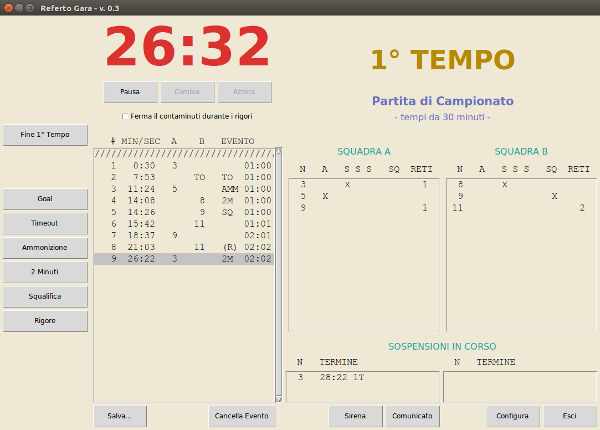«Report», programma di ausilio al refertista
Aggiornamento [01/10/2018]
Il repository https://bitbucket.org/gzuliani/sps-hc20.droid contiene i sorgenti di un'app Android che sfrutta il circuito realizzato per pilotare il tabellone. L'ultima versione dell'applicazione, firmata con una chiave di debug è disponibile per il download qui.
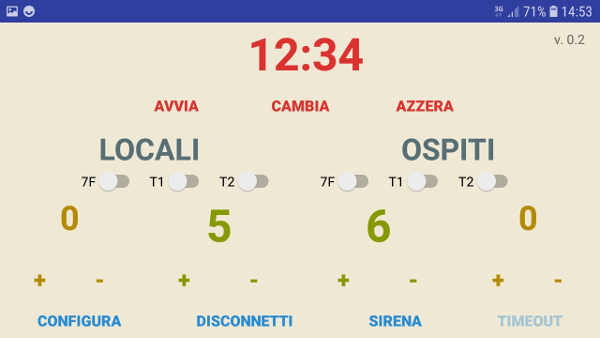L'app come appare su un Samsung J3
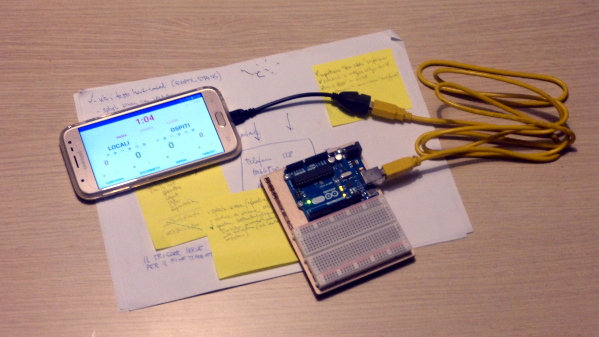Verifica dell'app su uno smartphone Samsung J3
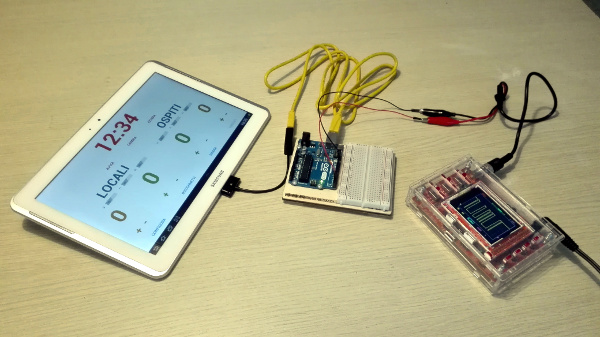Verifica dell'app su un tablet Samsung Galaxy Tab II
Il primo test sul campo dell'app ha dato buoni risultati: nell'ora e mezza in cui il terminale Samsung J3 è rimasto connesso al tabellone – la partita è iniziata alle 19:30 e terminata poco dopo le 20:40, ma il tutto è stato predisposto un quarto d'ora prima –, la carica della batteria è passata dal 93% al 76%. Su un totale di 8538 pacchetti inviati, 20 (0.23%) sono stati persi a causa di errori di timeout.
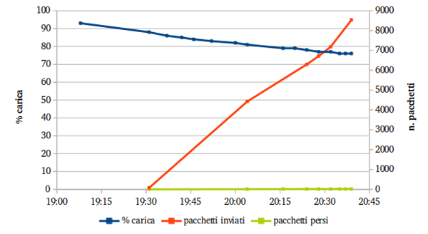Comportamento dell'app su un Samsung J3 durante una partita di allenamento
Pagina modificata il 08/10/2018